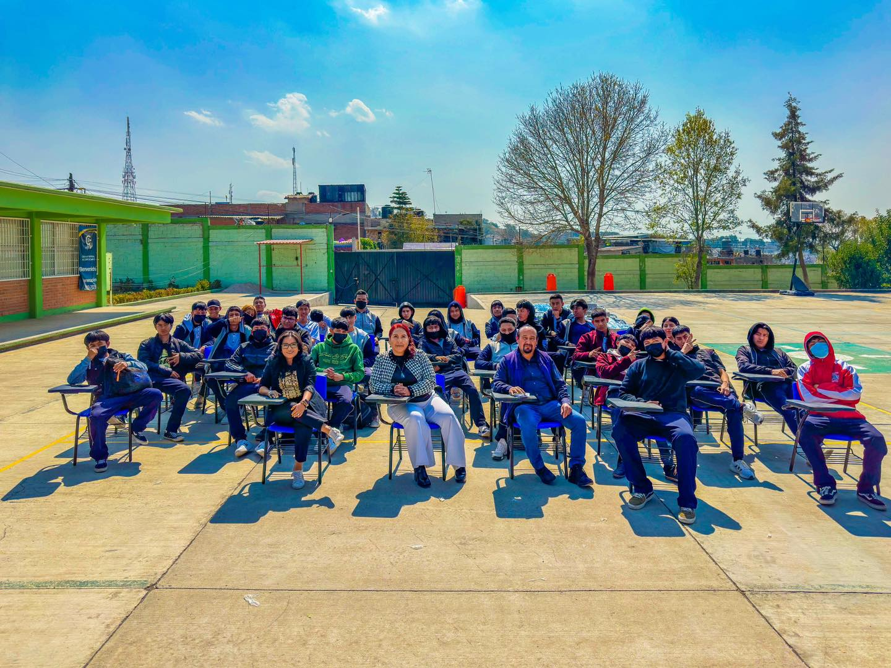

Historia del CBT ISAAC NEWTON
Los CBT (Centros de Bachillerato Tecnológico) dependen de la DGETI (Dirección General de Educación Tecnológica Industrial), y aunque muchos de estos planteles comparten una historia similar vinculada a la expansión de la educación tecnológica en México, los registros institucionales no están disponibles en línea para consulta pública.